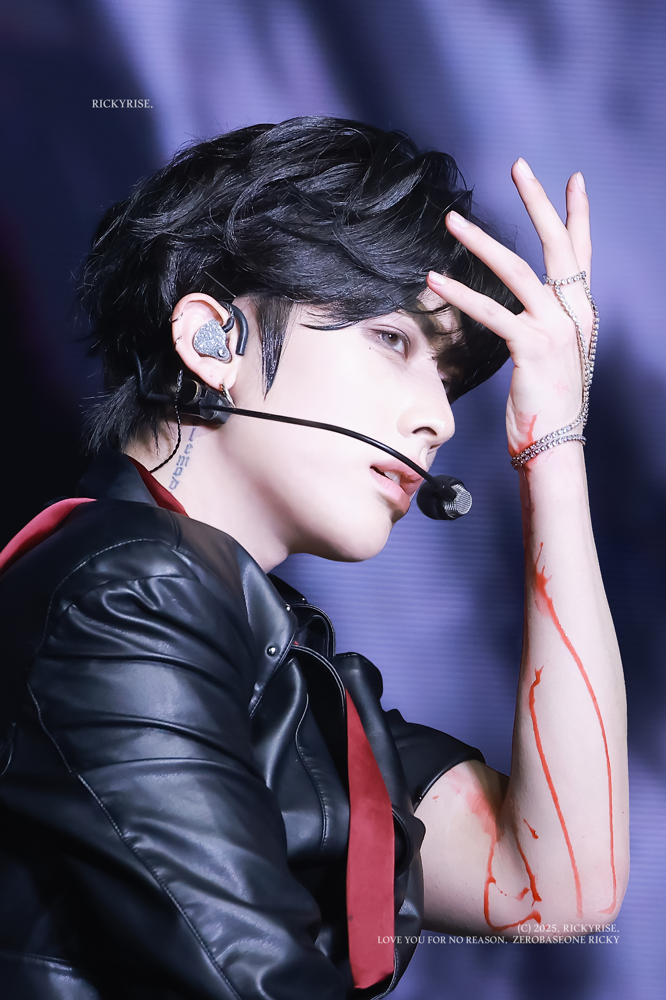
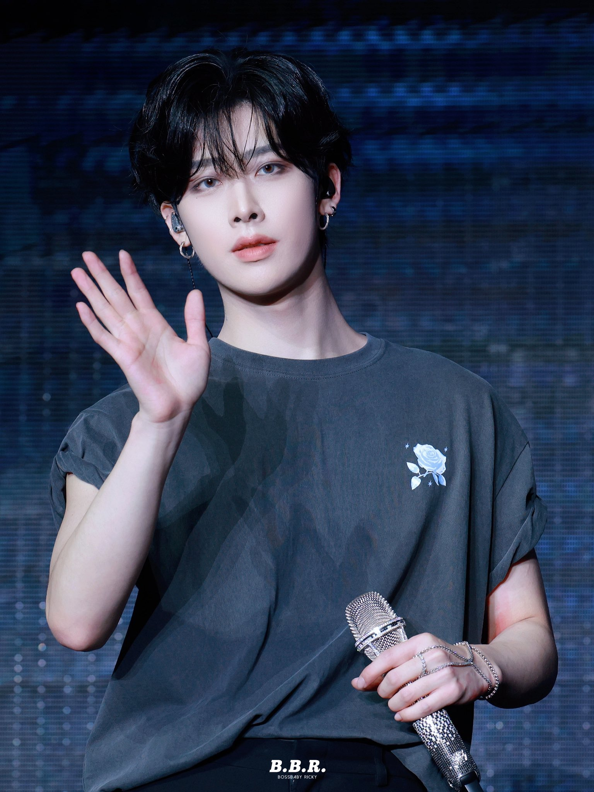
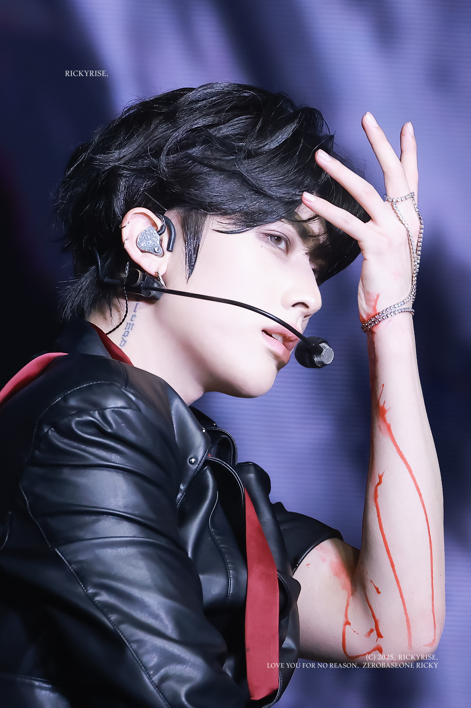
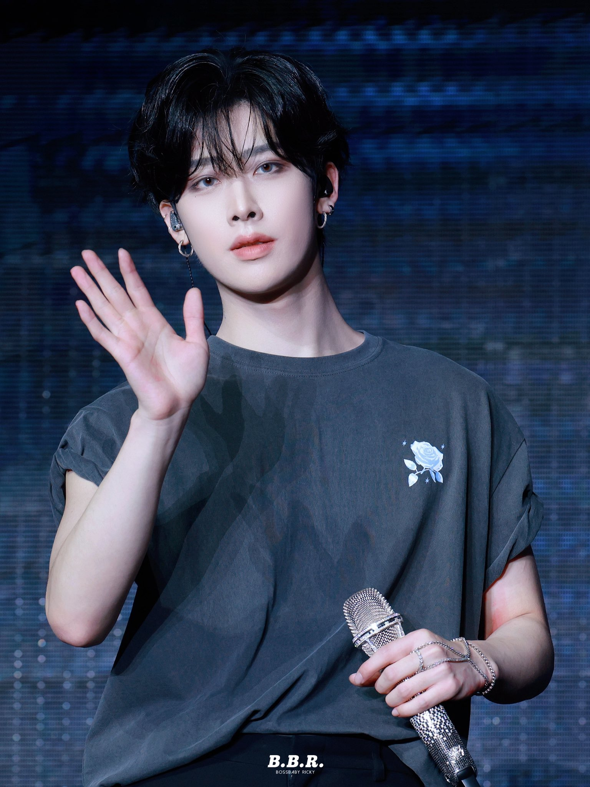

沈泉鋭-Ricky
基本資料
生日：2004/05/20
身高：184cm
MBTI：INTJ
國籍：中國 上海
動物塑：
貓
個人魅力點：
英文超好、建模感的長相(被稱為不像存在於三次元的美貌)
淚痣、young &rich, tall &handsome(每個都是真的)、
脖子與胸至肩的刺青
經歷
本名沈泉鋭，2023年，以樂華娛樂練習生的身份，出演男團選秀節目《BOYS PLANET》，最終以第4名成績，成為限定團體ZEROBASEONE的成員。
電視節目
2024/06/21：《奔跑吧》
活動主持
2024/07/28：KCON LA 2024 與成韓彬擔任特別主持
2025/08/02：KCON LA 2025 與成韓彬擔任特別MC
品牌活動
2023/09/06：Shinsegae × Frieze Seoul VIP Party 與金地雄、成韓彬
2024/02/28：ast Lives 首映會 與章昊、成韓彬、石馬修
2024/03/11：GUCCI Ancora 線下空間開幕 與章昊
2024/10/24：The Sound of Prada 與石馬修、金奎彬
 



- © ZEROSE | ZB1